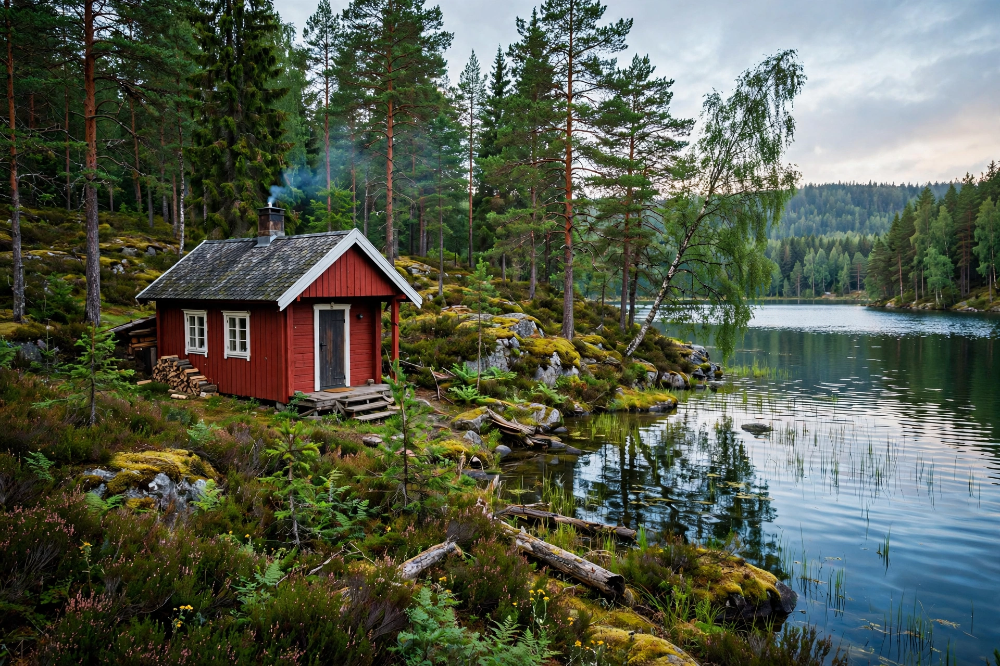

From Wikipedia, the free encyclopedia
| Småland | |
|---|---|
 | |
| Country | Sweden (Götaland) |
| Counties | Jönköping, Kronoberg, Kalmar (and parts of Östergötland, Halland) |
| Largest cities | Jönköping, Växjö, Kalmar |
| Area | ~29,400 km² |
Småland is a historical province (landskap) in southern Sweden, in the region of Götaland. Its name — "small lands" — reflects its origin as a collection of smaller territories ("folk lands") united later than the provinces around it. It borders Blekinge, Scania, Halland, Västergötland and Östergötland, with a long Baltic coastline in the east.
Much of Småland is a forested, lake-strewn highland with stony, poor soils that historically made farming hard; the classic image is the red-painted cottage, stone walls and small fields. Hardship drove heavy emigration to North America in the 19th century, immortalised in Vilhelm Moberg's The Emigrants novels. The coastal city of Kalmar, with its Renaissance castle, was historically one of Sweden's most important cities; the Kalmar Union was proclaimed there in 1397.
Småland is known for the Kingdom of Crystal (Glasriket) glassworks such as Kosta and Orrefors, for IKEA — founded in Älmhult in 1943 by Ingvar Kamprad, whose frugality is said to reflect the Småland character — and as the home of children's author Astrid Lindgren (born in Vimmerby), creator of Pippi Longstocking. The dialect and identity of Småland emphasise thrift, ingenuity and stubbornness.